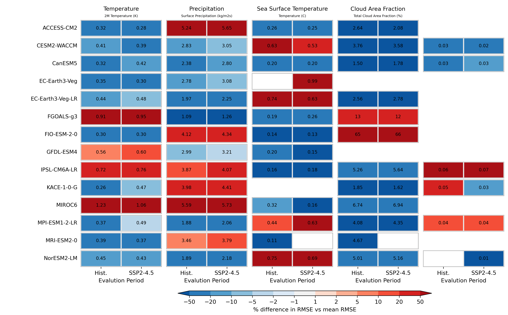

ClimateBench2.0: Probabilistic Climate Model Scoring
Despite their central role in climate science and policy, Earth system models (ESMs) remain difficult to compare in any rigorous or transparent way. Most existing evaluations either emphasize specific processes or rely on qualitative assessments across diverse metrics, making it nearly impossible to rank models by their predictive skill. ClimateBench2.0 introduces a probabilistic scoring framework that focuses instead on what matters most: a model’s ability to accurately simulate the historical climate and project future multi-decadal change.
The benchmark leverages high-quality observations from the satellite era (1980–present), with a particular focus on present-day metrics such as top-of-atmosphere (TOA) energy balance, seasonal cycle fidelity, and variability in clouds, aerosols, precipitation, and ocean heat uptake for which observational constraints are strongest. Paleoclimate reconstructions (LGM, LIG, Mid-Holocene) are incorporated as out-of-distribution tests to evaluate models beyond the narrow window of recent data. Scoring is based on robust probabilistic metrics such as CRPS and Brier scores, designed to assess ensemble skill and uncertainty quantification.
Crucially, statistical performance alone is not sufficient. ClimateBench2.0 will also introduce a dedicated Physical Consistency category, evaluating properties such as global energy balance closure, conservation of water and carbon, and realistic land-ocean-atmosphere energy exchanges. These physical integrity checks are essential for trusting a model’s out-of-distribution predictions — especially under strong forcings not seen in the historical record.
By combining empirical benchmarks with physically grounded constraints, ClimateBench2.0 transforms evaluation into a reproducible, quantitative, and outcome-driven ranking framework. It applies across model types, from physical to hybrid to ML-based, and integrates with existing efforts (e.g., CMIP, Obs4MIPs) to ensure transparency and broad adoption.
Quick Links
Headline Scorecard
The scorecard shows the comparison of climate model skill for a ten-year historical period (2005-2014) vs a ten-year projected period (2015-2024) from the SSP2-4.5 simulation. Skill is measured by root mean squared error (RMSE) of monthly model data from observations. The scorecard is colored based on the RMSE departure from the median skill for each variable, with the RMSE value shown as the number in each box.

Acknowledgements
Support for this project comes from Google Research.